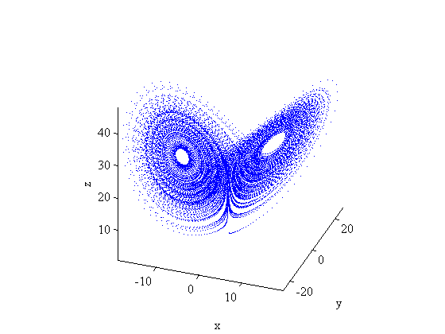
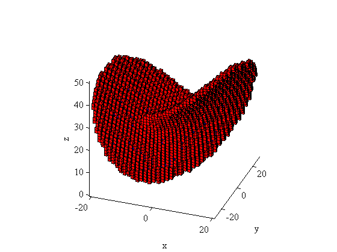

GAIO demo: A global unstable manifold in the Lorenz system
The Lorenz attractor
The Lorenz system \[ \begin{align} \dot x & = \sigma(y-x)\\ \dot y & = \rho x-y-xz\\ \dot z & = xy-\beta z \end{align}\] (with standard parameters , and ) was derived by Edward Lorenz in 1963 as a simplified model for atmospheric convection. A simulation shows the famous Lorenz attractor :
sigma = 10; rho = 28; beta = 8/3; v = @(x) [sigma*(x(:,2)-x(:,1)) ... % the Lorenz system rho*x(:,1)-x(:,2)-x(:,1).*x(:,3) ... x(:,1).*x(:,2)-beta*x(:,3)]; f = @(x) rk4(v,x,0.01,1); % f is the time-0.01-map y(1,:) = rand(1,3); % random initial point for k = 1:2e4, y(k+1,:) = f(y(k,:)); end % integrate plot3(y(:,1),y(:,2),y(:,3),'.','markersize',1); % plot trajectory view(20,30); axis tight; axis square; xlabel('x'); ylabel('y'); zlabel('z');
Preparations
We first choose sample points on a uniform grid in the cube ,
n = 7; x = linspace(-1,1,n)';
[XX,YY,ZZ] = meshgrid(x,x,x);
X = [ XX(:) YY(:) ZZ(:) ]; % $7^3$ sample points
initialize the tree using the box and initalize the covering by constructing a single box containing one of the two unstable equilibria of the Lorenz system
c = [0 0 27]; r = [30 30 40]; t = Tree(c,r); % the box tree dim = 3; depth = 18; % the depth of the tree x0 = [sqrt(beta*(rho-1)) sqrt(beta*(rho-1)) rho-1]; % an unstable equilibrium t.insert(x0', depth); % construct box around x0
The continuation algorithm
The following algorithm from [M. Dellnitz, A. Hohmann. The computation of unstable manifolds using subdivision and continuation. In: H.W. Broer et. al. (eds.): Nonlinear Dynamical Systems and Chaos, PNLDE 19, Birkhäuser, pp. 449-459, 1996.] computes a covering of the global unstable manifold of .
f = @(x) rk4(v,x,0.01,20); % time-0.2-map none = 0; hit = 1; ins = 2; expd = 4; % define various flags nb0 = 0; nb1 = t.count(depth); k = 0; while nb1 > nb0 t.change_flags('all', ins, expd); % flag inserted boxes as to be expanded b = t.first_box(depth); % start loop over boxes while (~isempty(b)) c = b(1:dim); r = b(dim+1:2*dim); % center and radius of current box flags = b(2*dim+1); % flags of current box if (bitand(flags, expd)) % if box is to be expanded P = X*diag(r) + ones(size(X))*diag(c); % sample points in current box t.insert(f(P)', depth, ins, none); % map points and insert boxes end b = t.next_box(depth); % loop to next box end t.unset_flags('all', expd); % unflag recently expanded boxes nb0 = nb1; nb1 = t.count(depth); k = k+1; disp(sprintf('step %d, %d boxes', k, nb1)); end
step 1, 7 boxes step 2, 19 boxes step 3, 42 boxes step 4, 76 boxes step 5, 120 boxes step 6, 168 boxes step 7, 259 boxes step 8, 347 boxes step 9, 437 boxes step 10, 622 boxes step 11, 955 boxes step 12, 1601 boxes step 13, 2584 boxes step 14, 3681 boxes step 15, 4492 boxes step 16, 4864 boxes step 17, 4926 boxes step 18, 4931 boxes step 19, 4931 boxes
Plot of the box collection
boxplot3(t); view(20,30); axis tight; axis square; xlabel('x'); ylabel('y'); zlabel('z');
Cleanup
delete(t);